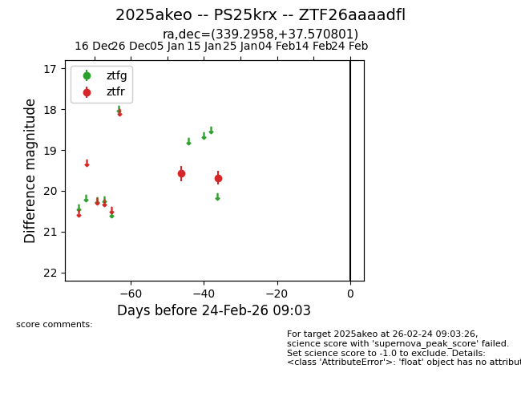
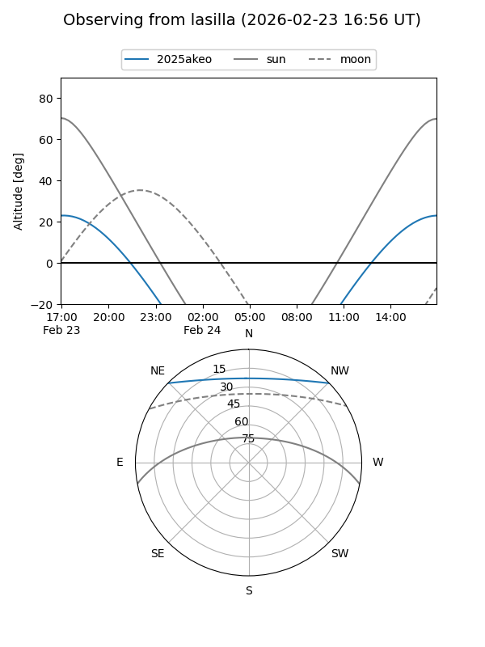
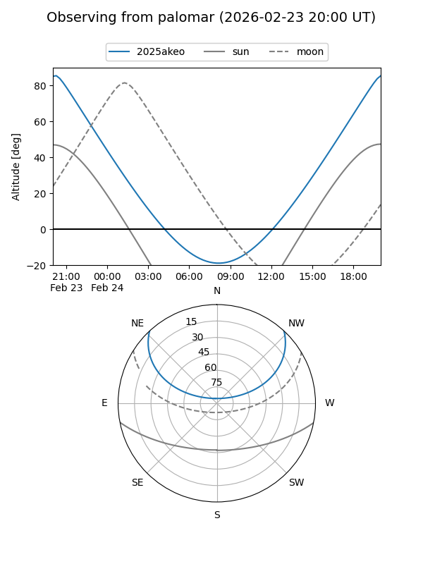

2025akeo
Target 2025akeo at 2026-01-21 03:46
Aliases and brokers:
FINK: link
Lasair: link
ALeRCE: link
TNS: link
YSE: link
alt names
ZTF26aaaadfl (ztf,fink_ztf)
2025akeo (tns,yse)
PS25krx (panstarrs)
Coordinates:
equatorial (ra, dec) = 339.2958,+37.57080
equatorial (HMS+DMS) = 22:37:10.98,+37:34:14.88
galactic (l, b) = (95.4888,-18.04487)
Flags:
Photometry:
last ztfr=19.68
2 ztfr detections
Lightcurve

Visibility


Additional plots